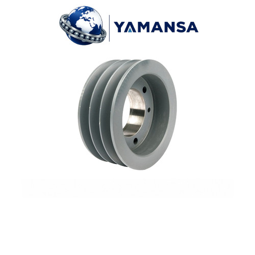

SPA 100x3 Burçlu V Kasnak 3 Kanallı 1610 Burç Ø100 mm
| Profil SPA | Anma Çapı 100 mm | Dış Çap 105,5 mm | Kanal 3 | Burç No 1610 | Maks. Mil 42 mm |
Profil, çap, kanal ve burç bilgileri aşağıdaki teknik liste ile birlikte değerlendirilmelidir. Satış birimi: Adet.
SPA 100x3 Burçlu V Kasnak 3 Kanallı 1610 Burç Ø100 mm
SPA 100x3 Burçlu V Kasnak, 100 mm anma çapında ve 3 kanallı bir kayış aktarma elemanıdır. SPA dar V kayışı için seçilen kasnakta profilin yanı sıra kanal adedi ve çap da eşleştirilir. Seçimde kasnağın karşı elemanla geometrik uyumu ve mile bağlantısı birlikte ele alınır. Anma çapı, milin gireceği deliğin çapı değildir.
Dış çapı 105,5 mm olan SPA 100x3 için P anma çapı ile O dış çapı farklı ölçülerdir. Kısıtlı yerleşim alanında dış çap kadar kasnağın eksenel yer ihtiyacı ve burca erişim mesafesi de önemlidir. SPA 100x3 için gövde tanımı Tip 2: dolu gövde, göbek bir yanda içeride. Göbek konumu, kasnak yüzleriyle mil üzerindeki diğer parçalar arasındaki yerleşim açısından değerlendirilir.
Teknik Özellikler
- Profil: SPA
- Kanal Sayısı: 3
- Anma Çapı (P): 100 mm
- Dış Çap (O): 105,5 mm
- Gövde Tipi: Tip 2 – Dolu gövde, göbek bir yanda içeride
- Burç No: 1610
- Maks. Mil Çapı: 42 mm
- Kasnak Genişliği (F): 50 mm
- Boşluk Çapı (J): 66 mm
- Göbek Uzunluğu (L): 25 mm
- Göbek Girintisi (M): 25 mm
- Satış Birimi: Adet
Kullanım Alanları
SPA 100x3; fan, pompa, konveyör ve benzeri kayışla hareket iletilen makine düzenlerinde, ölçüleri mevcut sisteme uyuyorsa değerlendirilebilir. 3 kanallı yerleşimde paralel kayışların kanal hizaları birlikte kontrol edilir; yalnız bir kanalı ölçmek yeterli değildir. Uygunluk, yalnız makinenin adına göre değil karşı kasnak, kayış kesiti, mil bağlantısı ve montaj alanı birlikte incelenerek belirlenir. Diğer ölçüler için kasnaklar kategorisi karşılaştırmaya yardımcı olur.
Konik Burç ve Montaj
Uyumlu burç: 1610. SPA 100x3 kasnağında burç modelinin yanı sıra seçilen burcun iç çapı da mil ile eşleştirilmelidir. Konik burç, sıkma sırasında konik yüzeyler üzerinden kasnak ile mil arasında bağlantı kurar. SPA 100x3 montajından önce temas yüzeyleri, kama bağlantısı ve hizalama kontrol edilmelidir; sıkma işlemi kullanılan burcun üretici talimatına göre yapılır. Burç kendi model ve iç çapıyla tanımlanan ayrı bir bağlantı elemanıdır. Konik burçlar içinden seçim yaparken bu iki bilgi birlikte okunmalıdır.
Kayış Seçimi
SPA 100x3 için SPA dar V kayışı seçilirken profil, kayış uzunluğundan ayrı değerlendirilir. 3 kanal bilgisi kayışın uzunluğunu belirlemez; uzunluk seçimi karşı kasnağın çapına ve iki mil arasındaki mesafeye de bağlıdır. Mevcut bir sistemde kayış üzerindeki kesit ve uzunluk işareti kontrol edilmeli, gerginlik yalnız elle hissedilerek ayarlanmamalıdır. SPZ, SPA, SPB ve SPC dar V kayışları arasından doğru kesitle ilerlenebilir.
Kısa SSS
Anma çapı mil çapı mıdır? Hayır; SPA 100x3 üzerindeki 100 mm değeri kasnağın anma çapını belirtir. Bu SPA 100x3 ölçüsünde belirtilen maksimum mil çapı 42 mm sınırıdır; bu değer, her burcun bu iç çapta olduğu anlamına gelmez. Mil bağlantısı için uyumlu burcun iç çapı esas alınır.
Yalnız fotoğrafa göre seçim yapılır mı? SPA 100x3 için seçimde teknik ölçüler esas alınmalıdır. Fotoğraf temsilî olabilir; kanal adedi, gövde biçimi ve burç kodu teknik listeyle karşılaştırılmadan montaj uyumu varsayılmamalıdır. Satış birimi adettir.